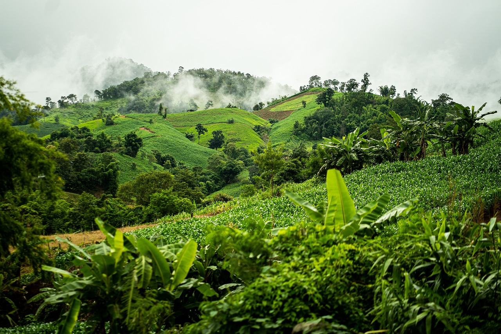

El panda rojo es una criatura solitaria que se encuentran en las montañas de Nepal, Myanmar y China central. El panda rojo es eclipsado por el gigante blanco y negro con el que comparte nombre. Suele ser del tamaño del gato doméstico, aunque su cola grande y espesa añade 46 centímetros a su cuerpo.
2
3
4